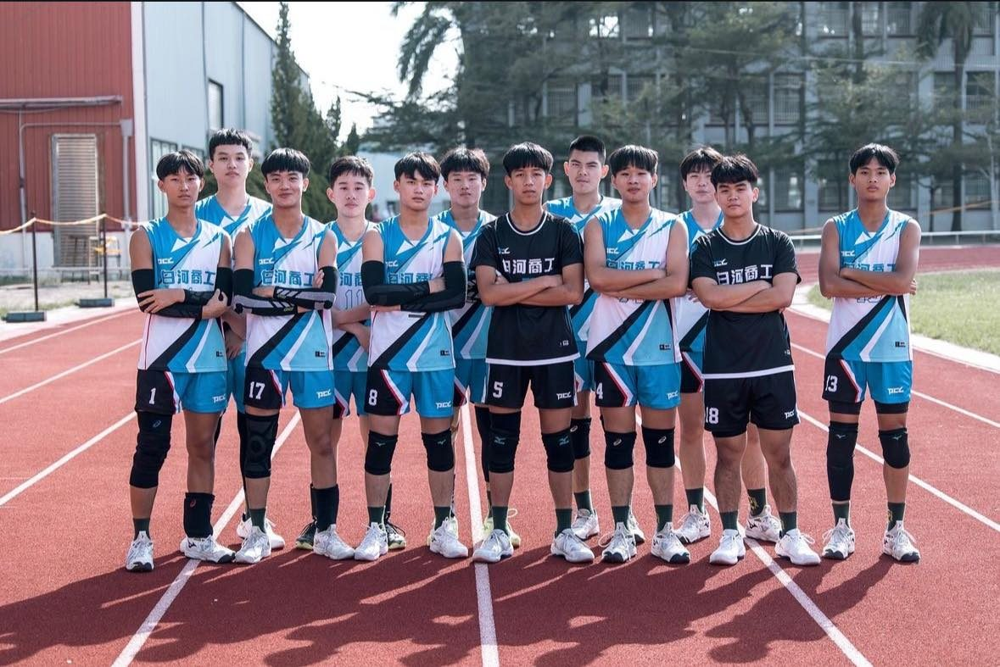
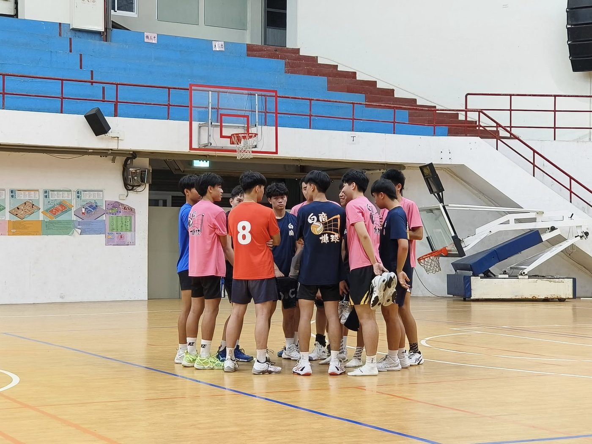

01我的故事
113學年度HVL高中排球甲級聯賽新面孔
113HVL高中排球甲級聯賽新面孔台南白河商工男排，隊史最佳紀錄曾於79學年度寫下甲級第五名佳績，不過近年多於乙組聯賽磨練，本學年度暌違多年再度踏上甲級賽場，雖然未能成功拿下勝利、達成晉級複賽目標，不過對球員而言仍是一次全新的體驗。
白河商工教練提到過往白河是台南排球重鎮之一，可惜因種種因素導致人才外流嚴重，三級銜接相較於其他縣市未能完全落實，目前陣中多為白河國中、六甲國中等台南在地學子，期望能透過高中端站上更高層級的舞台來促使基層深耕，也期盼有更多球員願意留在家鄉打球。
從112學年度的盃賽開始參加甲組賽事，但由於白河商工並未設立體育班，學生就讀自己喜歡的科系，因為課業的關係，只能在放學後及假日接受訓練，訓練時間和比賽經驗都不如其他球隊，加上球員身材處於劣勢，在甲級聯賽想站穩腳步並非易事，不過仍然期盼能夠持續耕耘，打造出讓在地球員信任與佇足的球隊。

